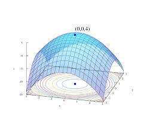

Увод у математичке моделе и машинско учење
Машинско учење (ML) представља област рачунарства која се у великој мери ослања на математичке моделе. Један од основних и најчешће коришћених модела је линеарна регресија, која служи за апроксимацију односа између података. Квалитет модела се мери функцијом грешке, која показује колико резултати предвиђања одступају од стварних података.Оптимизација параметара омогућава да модел буде што прецизнији и да његова предвиђања буду поуздана. Математички модели као што су интеграли, суме и линеарна алгебра омогућавају да се сложени односи у подацима формално опишу.
Примена ових модела је широка: од здравства, где се користе за дијагностику болести, до финансија, транспорта и маркетинга. Машинско учење омогућава анализу великих података, предикцију трендова и креирање интелигентних система који унапређују ефикасност и корисничко искуство.
На следећем линку налази се једна од конкретних примена у математици:

Примена математичких модела у машинском учењу
- Математички модели омогућавају формално описивање односа између података.
- Линеарна регресија користи параметре за предвиђање резултата.
- Функција грешке служи за мерење тачности модела.
- Оптимизација параметара осигурава да модел даје најбоље могуће резултате.
- Модели се примењују у здравству, финансијама, транспорту и маркетингу.
- Помажу у креирању интелигентних система и персонализованих препорука.